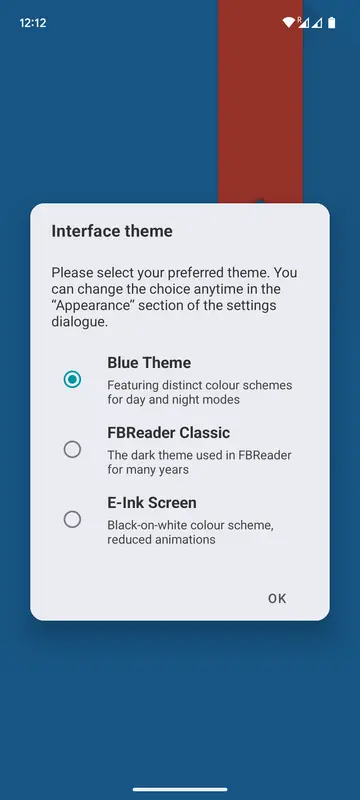

FBReader 到底值不值得掏钱？一页账本帮你算清楚
桌面版完全免费、移动端有 Premium 买断版，到底谁该买、谁不用买、不买有什么替代路——这篇把账算明白。
开头先抛问题：FBReader 到底值不值得掏钱？
说实话，这是我纠结过好一阵子的事。一开始是在 FBReader官网 上看到的介绍，装它就是图个"能看 ePub"，发现免费版基础功能够用之后，Premium 就变成了一个悬在头顶的"要不要升级"的问号。免费和付费的边界划在哪里？我到底属于哪类用户？
如果你也在犹豫，这篇就是给你的。我用自己半个多月的时间把免费版和 Premium 都摸了一遍，把这笔账拆成定价、算账、替代方案三块，最后给你一个能立刻对号入座的结论。
定价拆解：免费版给什么，付费版多什么
先搞清楚一个前提——FBReader 的授权模式按平台完全不同，这点挺关键，很多人一开始没注意。
桌面端（Windows/Mac/Linux）：完全免费，没有 Premium。也就是说，你在电脑上用 FBReader，这辈子都不用花一分钱。这一条直接帮很多人做了决定。
Android：免费版（Free）和 Premium 是两个独立应用。Premium 是一次买断，不是订阅。买完之后用 Premium 那个 APP 打开你的书库，书库文件会自动迁移过去，不用手动倒腾。
iOS：同一个 APP 内升级，也是一次买断。但 iOS 免费版有个硬伤——书库最多只能放 10 本书。这个限制比 Android 的功能阉割要狠得多。
现在拉一张功能对照表，Android 和 iOS 分开看：
Android：免费版 vs Premium
| 功能 | 免费版 | Premium |
|---|---|---|
| ePub/fb2/mobi 等文本格式 | ✅ | ✅ |
| 云同步（Book Network） | ✅ | ✅ |
| OPDS 网络目录 | ✅ | ✅ |
| 无广告 | ✅ | ✅ |
| Readium LCP 加密支持 | ✅ | ✅ |
| 需单独装插件 | 内置 | |
| 漫画 CBZ/CBR | 需装插件 | 内置 |
| TTS 朗读 | ❌ | ✅ |
| Google/DeepL 在线翻译 | ❌ | ✅ |
免费版缺的东西集中在三个方面：PDF 和漫画需要额外插件、没有朗读、没有在线翻译。其他核心阅读功能，包括云同步、网络目录、加密支持，免费版都有。
iOS：免费版 vs 完整版
iOS 的情况不太一样，最大的分水岭是那个 10 本书上限。超过 10 本你连书库都用不了，这就不是"要不要升级"的问题，是"不升级就别用"的问题。完整版解锁的在线翻译也是一个实用功能，但 iOS 上 OPDS 网络目录本身就被平台限制住了，跟买不买没关系。

算账：三类用户各算各的
光看功能表是静态的，得放进使用场景里才算得清。我把人分成三类，对号入座就行。
轻度用户：偶尔翻翻电子书，书库不超过 20 本
这类用户的典型画像：手机里装着 FBReader，偶尔从FBReader下载或者网络资源下本 ePub，地铁上、睡前读几页。没有 PDF 需求，不看漫画，外语书读得少。
免费版够不够？ 足够。Android 上文本格式的阅读体验和 Premium 完全一样，界面、排版、云同步都不缺。iOS 的话，书库 10 本上限是个坎，但轻度用户其实真正常驻书库的书往往也就两三本——读完删了再下新的，这个上限基本碰不到。
如果非要算每单位成本？ 免费。不用掏钱，免费版就是为这类人做的。
我自己的情况：一开始我属于这类，Android 免费版装了大半年没觉得有任何功能不够用。直到有一次老板甩给我一份 PDF 规格书让我路上看，我才意识到"哦，原来我需要 PDF"。
主力用户：每天都在 FBReader 上花超过 30 分钟
这类人的书库通常在 50~200 本，覆盖 ePub 和 PDF 两种格式（技术文档、产品手册、设计稿经常是 PDF），可能还有一些漫画用来放松。外语书偶尔翻两本，需要查词翻译。
这里是 Premium 最尴尬的地带——它提供的东西不多，但每一样都可能戳中痛点。
PDF 内置这件事，看起来是"把免费版需要装的插件整合进来"，但实际体验差不少。插件是第三方维护的，渲染速度偶尔会崩，大文件翻页会卡；Premium 内置的 PDF 引擎是 FBReader 自己调的，跟排版引擎深度整合，翻页速度和内存占用都好一截。
翻译功能是 Premium 独有的，免费版真没有替代。遇到外文书里一个不懂的术语，免费版只能跳出去开浏览器搜、或切词典 APP，来回切换至少三四秒；Premium 里长按单词直接弹出翻译结果，DeepL 甚至能翻整段。这个时间账其实挺吓人的——假设一个月翻 20 本外文书，每本遇到 30 个生词，每个生词省 3 秒，一年下来省 6 小时以上。
每单位成本大概多少？ Premium 是一次买断，假设花了 30 块左右，主力用户每天用半小时，一年 180 小时，每小时成本不到 2 毛钱。如果算上翻译省下来的时间，这个成本可以忽略。
重度用户：书库几百本起步，PDF/漫画/TTS 一个都不能少
重度用户的典型：电子阅读器（InkBook、BOOX）装机 + 主力阅读 APP 就是 FBReader，PDF 是主要格式之一（读论文、看设计稿、跟进产品文档），TTS 用来"听书"（通勤路上、做家务时），翻译功能每天都要用。
Premium 对重度用户来说是必选项，没有任何商量余地。
PDF 内置不是"方便不方便"的问题，是"能不能稳定用"的问题。免费版的 PDF 插件在大文件、复杂排版文件上容易崩，而重度用户读的 PDF 恰恰是这类。TTS 更是刚需——免费版没有任何内置朗读能力，第三方 TTS APP 跟阅读器的整合度很差，调不起来，关于这部分差异的详细对比在FBReader文档里能找到。
而且有个好消息：部分电纸书品牌（比如 InkBook）会预装 Premium，或者允许已经买了硬件的用户免费安装 Premium 版。如果你刚好有一台 InkBook，这钱可以省。

不付费的替代方案：还有哪些路
如果你看完上面三类人觉得"我好像还没到那个度"，或者就是不想花钱，那还有几条路可走。
PDF 插件方案：Android 免费版单独装 PDF 插件。这个插件免费，功能上跟 Premium 内置的差不了太多，主要是稳定性偶尔有波动、渲染速度稍慢。对不频繁读 PDF 的人来说，够用了。
PDF 换 APP 读：一个更干脆的思路是——PDF 不用 FBReader 读。市面上免费 PDF 阅读器一抓一大把（MuPDF、PocketBook），专门读 PDF 比 FBReader 效果可能还好。FBReader 专注读文本格式就行，PDF 交给别的工具，反而更简单。
换阅读器：这个是终极替代。FBReader 不是唯一的 Android 阅读器，PocketBook、Moon+ Reader 都提供免费版，部分内置 PDF 和漫画支持。但换工具的代价很大——书签、笔记、云同步全部断掉，书库要重新建一遍。除非你真的不需要 FBReader 的 OPDS 网络目录或 Readium LCP 加密支持，否则不建议走这条路。
iOS 用户的特殊困境：10 本书上限是 iOS 免费版的硬伤。但有个小技巧——iOS 上文件导入的方式很多（Safari 下载、AirDrop、iCloud Drive），读完一本书就从书库里删掉、需要时再导入，其实能绕开这个限制。只是操作上稍微麻烦一点。
结论：哪类人闭眼付，哪类人再等等，哪类人永远不用付
终于到了拍板的时候。给你三个直接的对号入座：
闭眼买的：
- Android 上每天用 FBReader 阅读超过 30 分钟，书库有 PDF 需求的主力用户
- 重度依赖 FBReader 作为唯一阅读器、同时需要 PDF + 漫画 + TTS 的重度用户
- 外语书读得多、翻译需求高频的读者
再等等的：
- iOS 用户但书库常驻不超过 10 本的轻度用户——先凑合用免费版，等哪天觉得 10 本不够了再买
- Android 主力用户但 PDF 用得很少、主要读 ePub 的——先装 PDF 插件试试看，觉得插件不够顺手再升级
- 用 InkBook 电纸书的——先看看设备上能不能免费装 Premium，别重复花钱
永远不用付的：
- 只用桌面版的所有人——桌面版完全免费，功能完整，这辈子不用掏一分钱
- 纯读 ePub/fb2/mobi 文本格式的轻度 Android 用户——免费版功能够用，没有必要花冤枉钱
- 能接受 PDF 用别的 APP、漫画也用别的工具的人——工具分流反而可能更高效
我自己呢？属于"闭眼买"那类。因为上班需要频繁看 PDF 规格书、下班读外文书需要翻译，Premium 的几个功能刚好卡准了我每天都要用的那几个痛点。买了之后没后悔过，也不觉得这钱花得亏。
至于定价"鸡贼不鸡贼"——我倒觉得还行。一次买断没有订阅焦虑，免费版给的东西也没砍到不能用。它的商业模式很清晰：基础阅读全免费，把 PDF 内置、翻译、朗读这些"增值功能"放到付费版里，不影响核心体验但给有需要的人一个升级入口。挺合理的。
最后一句话：如果你在 Android 上每天都用 FBReader，又偶尔需要 PDF 或翻译功能，买吧，几十块钱换来的时间和体验值得。如果你只是偶尔翻翻电子书、或者只用电脑读，那就免费版够用。不要为了"好像应该升级"而升级。
最后顺手提一句资料的事——这套关于 FBReader 的整理内容在 GitHub 上有完整目录，Gitee 和 GitCode 分别是国内镜像和第三方备份副本，访问起来各有方便。